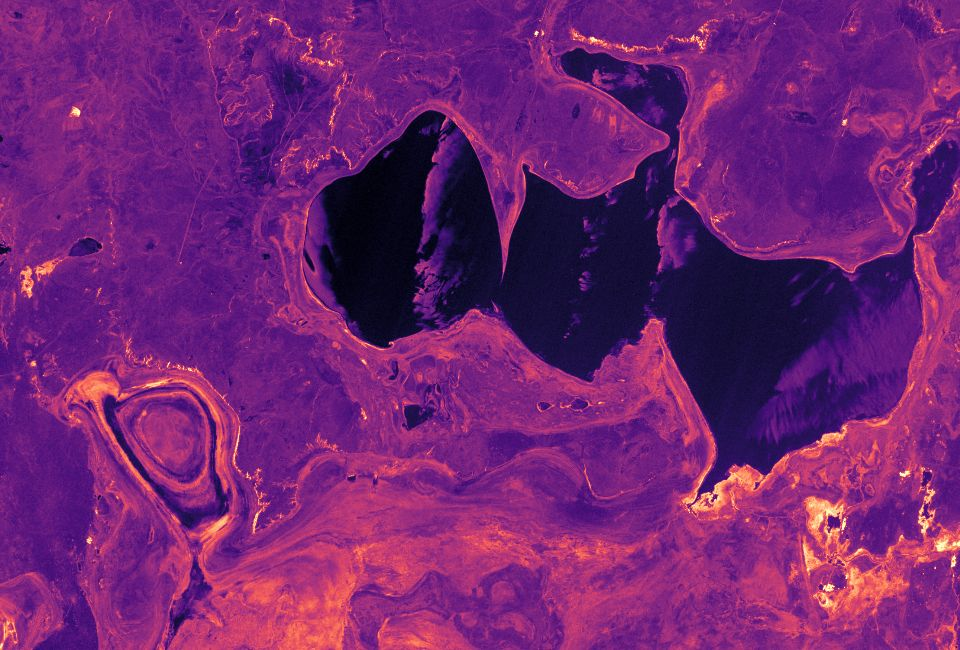
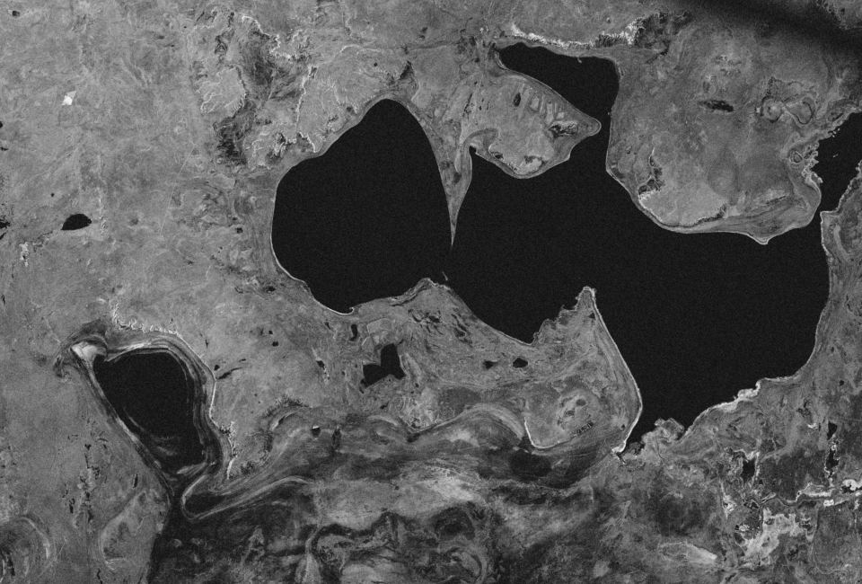
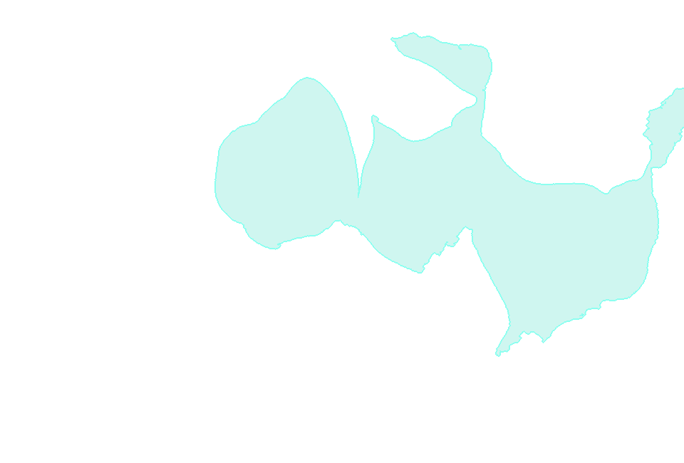
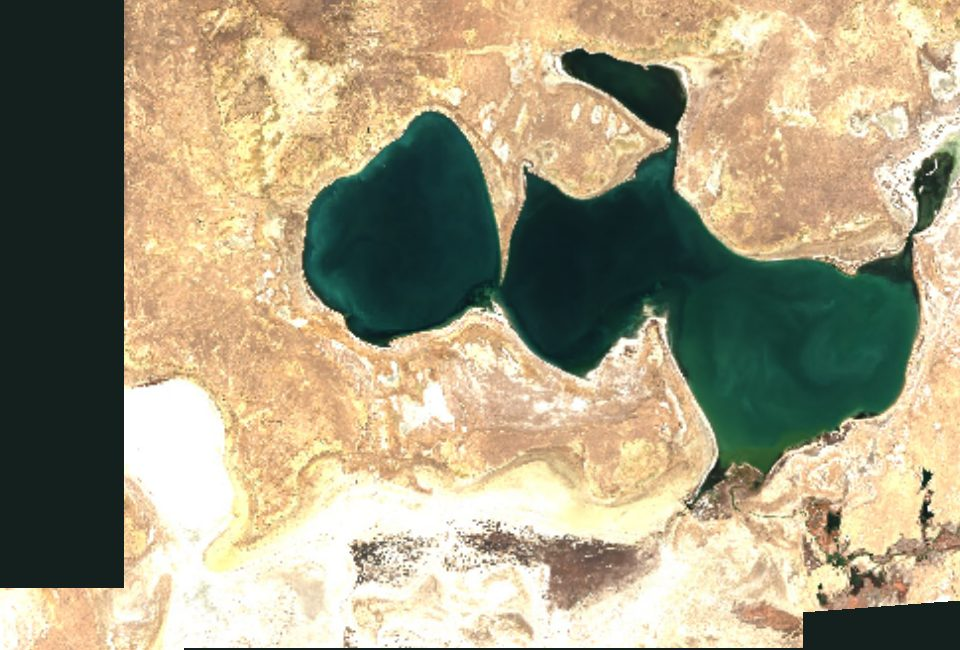
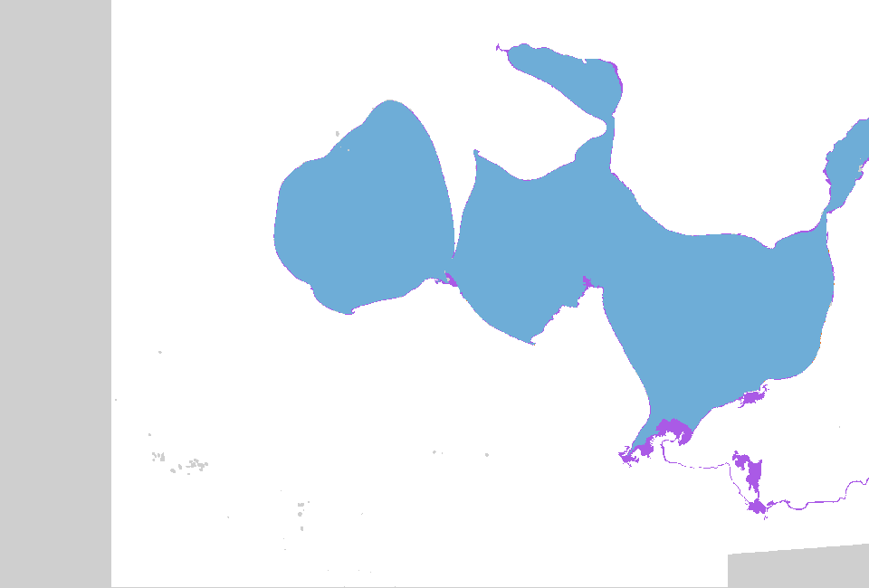

PLATE02
How we map water with radar
Follow the process from radar observations to a mapped shoreline, then see how we check the result against an independent satellite.







NISAR · BRIGHTNESS · 21 JUN ← wind-roughened waterDark = smooth · Bright = rough—
STEP 1 / 7
Radar measures the surface
NISAR sends L-band microwaves toward Earth and measures the signal reflected back. Surface roughness affects that return. On 21 June, wind-roughened water scattered the signal strongly, making parts of the lake look as bright as the desert.
STEP 2 / 7
Brightness changes with conditions
On 20 August, calmer water reflected much of the radar signal away from the satellite and looked dark. The same lake can look very different from one image to the next, so brightness alone is not a reliable way to map water.
STEP 3 / 7
Compare repeat observations
NISAR observes this area about every 12 days. Comparing a pair of passes measures coherence: how consistently the radar signal returns from the same place. Stable land usually has higher coherence; changing water surfaces usually have lower coherence. This helps identify water even when wind changes its brightness.
STEP 4 / 7
Turn coherence into a water map
After smoothing the image, we apply a coherence threshold and keep low-coherence areas connected to the lake, removing isolated patches and filling small gaps. The late-June map shows about 3,071 km² of open water in the North Aral, close to the reported figure of about 3,065 km².
STEP 5 / 7
Repeat the analysis in October
Applying the same workflow to 7–19 October gives an estimated 2,939 km² of open water. This comparison captures a seasonal change; these observations alone cannot separate the effects of evaporation from upstream water use.
STEP 6 / 7
Locate shoreline change
Comparing the June and October maps shows about 133 km² that was water in June but not in October, mostly along shallow margins. Less than 1 km² became newly wet, while the deeper basin remained mapped as water.
STEP 7 / 7
Check the map with another satellite
We compare our result with an independent Sentinel-2 image from 12 October. In the cloud-free comparison area, the maps score 0.98 on F1, a measure of overlap where 1.0 is a perfect match. Orange: radar only. Violet: optical only. Blue: both.